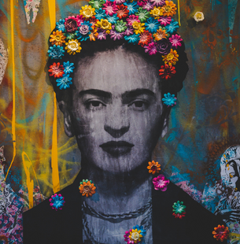

Marie Curie
 Fue la científica pionera de la radioactividad. Fue la primer y hasta el momento también única persona en obtener dos premios Nobel, una de las científcas más importantes del siglo XX y toda la historia. Nació en Polonia en Polonio y luego se tuvo que ir a vivir a París para poder estudiar, ya que donde vivía previamente, las universidades no aceptaban mujeres. Trabajó junto a su espaso Pierre Curie logrando grandes e importantes descubrimientos. Apesar de todas las díficultades que tuvo que afrontar como mujer y extranjero su perseverancia y amor por la ciencia la han dejado como un gran personaje de la historia.
Fue la científica pionera de la radioactividad. Fue la primer y hasta el momento también única persona en obtener dos premios Nobel, una de las científcas más importantes del siglo XX y toda la historia. Nació en Polonia en Polonio y luego se tuvo que ir a vivir a París para poder estudiar, ya que donde vivía previamente, las universidades no aceptaban mujeres. Trabajó junto a su espaso Pierre Curie logrando grandes e importantes descubrimientos. Apesar de todas las díficultades que tuvo que afrontar como mujer y extranjero su perseverancia y amor por la ciencia la han dejado como un gran personaje de la historia.
Frida Kahlo
La retratista del dolor. Fue una pintora mexina que no tuvo una vida nada fácil pero aún así la logró aprovechar al máximo marcando el arte nacional y mundial. Un problema de salud que tuvo en la niñez le dejó una pierna más delgada que otra y a la temprana edad de 18 años tuvo un aparatoso accidente que la dejó en cama y la hizo pasar por 32 operaciones y le dejó daños irreparables. Además de esto su vida amorosa más que amor tuvo dolor y traición. Su principal relación, con Diego Rivera, estuvo llena de infedelidades y apegos, lo que hizo su vida aún más dura. Pero apesar de todo esto nunca abandonó sus sueños y lo que más amaba, pintar.